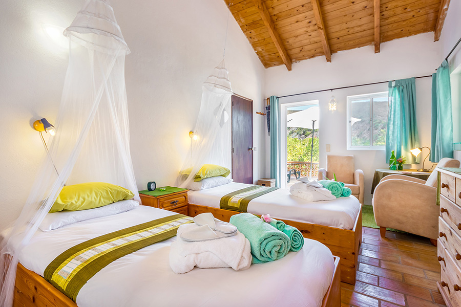

Western Algarve, Portugal · Est. 1992
A wellness retreat in Portugal
Where we sit
The Algarve’s quieter, western side
Portugal’s Algarve draws visitors for its coastline, but our 16-hectare valley at Cotifo, near Barão de São João, sits well back from the resort strip — fifteen minutes from Lagos, an hour from Faro Airport, and a genuinely different pace once you’re through the gate.
Faro has direct flights from most major European cities, which keeps the journey short even though the setting feels remote. With the region’s mild winters, we run retreats year-round — there’s no single “season” for a reset here, whatever the month.
Portugal itself makes an easier choice than it might first appear next to destinations further afield: English is widely spoken, the euro keeps budgeting simple, direct flight times from the UK and northern Europe rarely stretch past three hours, and the Algarve’s produce means our juices are made from fruit and vegetables grown a short drive from the kitchen, not flown in.

Three ways to stay
One valley, more than one way in
Not everyone wants a full juice fast, and not every group needs the same programme — so the site works three ways.
Juice detox retreats
Our core programme — 7 or 10 nights of juice fasting, daily yoga, evening meditation and workshops, running year-round.
Wellness Stay
A relaxed, non-detox stay with breakfast included and optional morning yoga — for a standalone break or either side of a retreat.
Retreat hire
The whole valley, hired exclusively for your own yoga, wellness or corporate group, with our team and facilities on hand.
Most first-time guests choose the detox programme; couples or friends easing in gently often start with a Wellness Stay either side of it; and facilitators running their own yoga, wellness or corporate programme look at hiring the valley outright. If you’re not sure which fits, get in touch and we’ll help you work it out rather than steer you toward whichever is easiest to book.

More than three decades
Running since 1992 — among the first of its kind
Moinhos Velhos was founded in 1992 by Frank Jensen and Anne Karine Moss, among the first juice-fasting centres anywhere in the world. Today’s resident facilitators — Richard, Karen, Chris, Ivan and Bliss — carry more than fifty years of combined experience between them, and retreats are still capped at seventeen guests so that experience actually reaches you.
Several of today’s team worked alongside the original founders for years before taking the retreat on themselves, which is part of why the programme has changed so little in its essentials even as the wider wellness industry around it has grown considerably louder and more commercial.
“One of the ten best detox retreats in the world.”
The Sunday Times
A setting people notice
Quartz-laced hills beside a quiet dam
Thousands of small quartz crystals sit naturally in the ground throughout the valley, and the hills around it kept the 2003 wildfires that scarred much of the wider region at the boundary rather than inside it. We can’t explain either fact scientifically — we can only say that guests, year after year, arrive as sceptics and leave remarking on how the place feels.
On site
A working retreat, not a resort
Sixteen hectares, twelve buildings and a short walk between everything you’ll actually use — no shuttle buses, no separate spa wing to book into. The pool sits below the temple, the clinic sits beside the dining room, and the whole layout follows the hillside rather than fighting it.
Salt-water pool
A 12 x 6 m chemical-free pool, used year round.
Finnish sauna
Wood-fired, with gender-specific and mixed timeslots.
Therapy clinic
Three treatment rooms and a QRS electromagnetic bed.
The yoga temple
Open-sided, above the gardens, hung with forty ascended-master pictures.
Where you’ll stay
From canvas to the converted mill
Accommodation spans a genuine range — summer bell tents with electricity and wifi, twin cottages and guesthouse rooms, compact singles in the Lodge, right up to premium en suite singles in the old water mill itself. Every option is en suite with wifi and mosquito nets, whatever your budget.


Getting here
Closer than the quiet suggests
However you arrive, the last stretch of the journey is the same for everyone — local roads giving way to the valley, and the rest of the Algarve falling away behind you.
- By airFaro Airport has direct flights from most major European cities, and sits about an hour's drive from the valley.
- By roadThe A22 motorway is ten minutes away, so the convenience is there without the motorway noise reaching the gate.
- TransfersWe arrange pick-up from Faro (from €35pp) or collect you from Lagos itself, always free of charge.
16 hectares
of private valley and gardens
15 guests max
per retreat, by design
1 hour from Faro
15 minutes from Lagos
Find your way into the valley
Check live availability across every room type, or get in touch about a Wellness Stay or hiring the site outright.